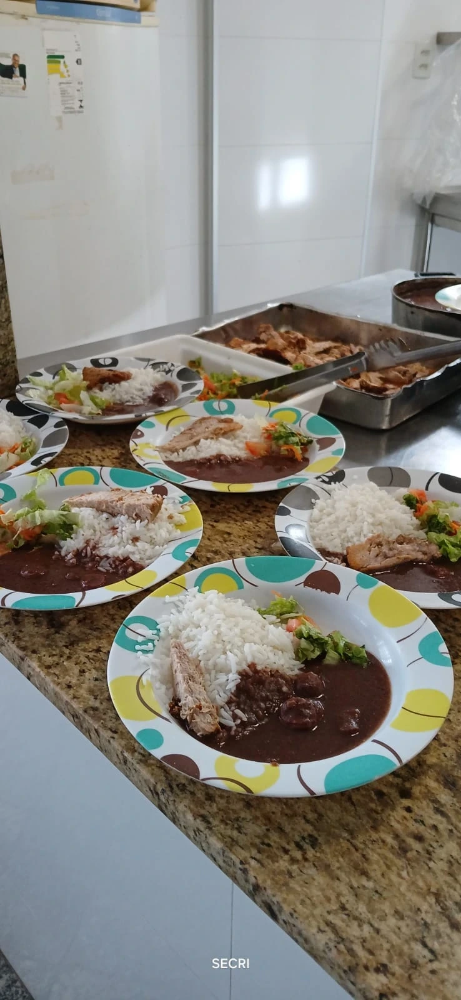

Nosso Impacto
38 anos de atuação no Território do Bem, em Vitória/ES. Os números abaixo são de 2025 e constam do nosso relatório anual de atividades.
Resultados de 2025

Mais do que números
As refeições vão além da alimentação: promovem cuidado, proteção social e desenvolvimento saudável. O acompanhamento às famílias fortalece vínculos, amplia o acesso a direitos e favorece o desenvolvimento integral.
Os resultados refletem o fortalecimento de vínculos familiares e a construção de novos caminhos para o futuro de crianças, adolescentes e suas famílias.
Onde atuamos
O Território do Bem reúne 6 bairros e 3 comunidades no alto de Vitória. O nome foi escolhido pelos moradores para ressignificar o histórico de violências da região.
- Consolação
- Gurigica
- São Benedito
- Itararé
- Bonfim
- Bairro da Penha
- Jaburu
- Floresta
- Engenharia
Reconhecimento institucional
Homenagem na Câmara Municipal de Vitória
Em sessão solene, o SECRI foi homenageado pelo trabalho no Terceiro Setor. A honraria destacou os 37 anos de atuação e o impacto social na vida de famílias do Território do Bem.
Comenda Monsenhor Rômulo Neves Balestrero
Concedida em sessão solene na Assembleia Legislativa do Espírito Santo, reconhece a atuação do SECRI na promoção do desenvolvimento social de crianças e adolescentes.
Em 2025 o SECRI também recebeu auditoria interna independente, conduzida pela Ativo Assessoria & Consultoria a pedido da ArcelorMittal, sobre a execução do projeto O Som do Bem.
Campanhas e mobilização
itens escolares
Campanha Mochila Solidária, que beneficiou o SECRI e outras quatro organizações.
brinquedos
Campanha A Loja Vazia de Brinquedos, do Shopping Vitória com o Instituto Américo Buaiz, destinados a sete organizações.
participantes
Cine IAB, sessão de cinema dedicada às crianças e adolescentes das instituições parceiras.
Indicadores pactuados
O SECRI monitora metas quantitativas com meios de verificação definidos. São elas que sustentam a prestação de contas aos parceiros e financiadores.
| Indicador | Meta |
|---|---|
| Frequência média mensal | 95% |
| Atendidos com acesso à alimentação | 100% |
| Participação das famílias nos encontros | 70% |
| Evolução em habilidades socioemocionais | 80% |
| Participação ativa na expressão artística | 80% |
| Conclusão das formações ofertadas | 70% |
| Casos com encaminhamento efetivo | 60% |
| Aumento de engajamento comunitário | 58% |
| Ações integradas por ano | 6 |
| Campanhas solidárias por ano | 2 |
Como se distribuem as 28 parcerias
O equilíbrio entre captação de recursos e execução direta mostra que o SECRI não depende de uma única fonte.
- Financiamento6 · 21%
- Execução conjunta6 · 21%
- Rede socioassistencial5 · 18%
- Apoio técnico4 · 14%
- Cultural e comunitária4 · 14%
- Qualificação3 · 11%
Quer ver de perto?
Os relatórios anuais de atividades detalham cada projeto, ação e resultado.
Ver relatórios e balanços